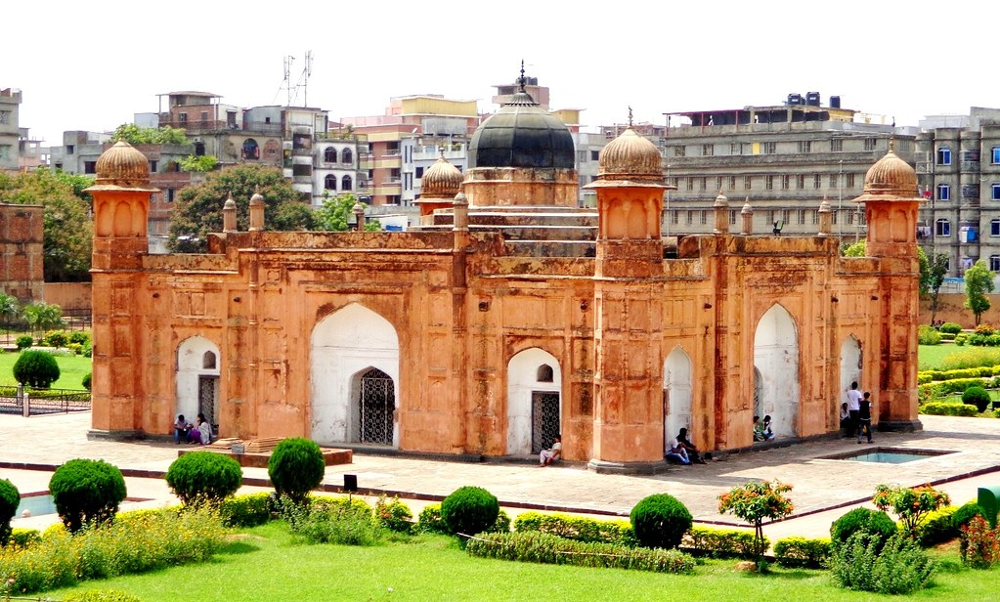

Lalbagh Fort or Fort Aurangabad, an incomplete Mughal palace fortress at Dhaka on the river Buriganga in the southwestern part of the old city. The river has now gone further south and flows at quite a distance from the fort. D'Oily's painting (1809-11)
shows that more than half of this east-west oblong fortress touched the water of the river on its south and southwestern sides.
The construction of the fort was commenced in 1678 AD by prince muhammad azam during his 15 month long vice-royalty of Bengal, but before he could complete the work he was recalled by aurangzeb. His successor,
shaista khan did not continue the work, though he stayed in Dhaka up to 1688. His daughter bibi pari (Lady Fairy) died here in 1684 and this led him to consider the fort to be ominous.
Site plan of Lalbagh Fort For long the fort was considered to be a combination of three buildings (the mosque, the tomb of Bibi Pari and the Diwan-i-Aam), two gateways and a portion of the partly damaged
fortification wall. But recent excavations carried out by the Department of Archaeology of Bangladesh have revealed the existence of other structures and it is now possible to guess a more or less complete picture
of the fort (see site plan of Lalbagh Fort).
In the present fort area of 18 acres, excavations have revealed remains of 26/27 structures with elaborate arrangements for water supply, sewerage, roof gardens, and fountains. Renovation work by the Archaeology
Department has now put Lalbagh Fort in a much-improved shape and has now become an interesting spot for tourists and visitors.
Of the three surviving gateways, the southern one is the most imposing. Seen from the front it is a three storeyed structure with a fronton, bordered with slender minarets. From inside it gives the impression
of a two storeyed structure. The gateway on the northeast is a much smaller and simpler structure. It is gathered from structural evidence that the fort extended to the eastern side beyond the present Shaista Khan
Road. The third gate, now in the centre of the northern boundary wall, was left incomplete. The present one is a recent construction.
The southern fortification wall, running westward from the South Gateway went up to the huge bastion in the southwestern corner of the fort. Then the fortification ran northward for a distance and then
it is lost. The boundary wall on the eastern side connecting the southern and northern gateways is a modern wall and it is now assumed that the fort originally embraced areas further east beyond the present Shaista
Khan Road.
On the northern side of the southern fortification were placed utility buildings, such as the stable, the administrative block, and its western part accommodated a beautiful roof-garden with arrangements
for fountains and a water reservoir. The residential part was located on the eastern side of the western fortification, mainly to the south-west of the mosque, where the remains of a sewerage line have been found.
The southern fortification is a twin wall, the outer one is about 6.10m high and 1.37m thick, while the inner one is 13.72m high with same thickness. The two are solid up to the height of 6.10m and there are regular
openings in the upper part of the inner wall.
The original fortification wall on the south had 5 bastions at regular intervals and the western wall had 2 bastions. Among the 7 bastions the biggest one is near the main southern gate at the back of the
stable, which occupies the area to the west of the gateway. The bastion had an underground tunnel. Among the five bastions of the southern fortification the central one was single storeyed, the rest are double storeyed
structures. The central one contains an underground room with veranda on three sides, and it can be approached either from the riverside or from its roof. The double-storeyed bastion at the southwestern corner of
the fort was possibly a Hawakhana, with a water reservoir on its roof. Two lines of terracotta pipes have been found, which connected all establishments of the fort with this reservoir. An extra-strong terracotta
pipe line made with double pipes, one inside the other, have been uncovered in the area between the Hammam and the tomb of Bibi Pari.
The area westwards from the stable parallel to the southern fortification once had a beautiful roof garden with fountain, rose and star designs marking the flowerbeds, and a water reservoir. The buildings
underneath contained the administrative blocks and the residential part on the western side.
The central area of the fort is occupied by three buildings - the Diwan-i-Aam and the Hammam on its east, the mosque on the west and the tomb of Bibi Pari in between the two - in one line, but not at equal
distance. A water channel with fountains at regular interval connect the three buildings from east to west and two similar channels run from south to north, one through the middle of the ground in between the Diwan-i-Aam
and the tomb forming a square tank with fountains at the intersection with the east-west channel, and the other from the water reservoir passing through the bottom of the tomb.
The water channels and the fountains, a very common feature of Mughal architecture, set an atmosphere not very unlike north Indian Mughal forts. A big square water tank (71.63m each side), placed in front
(to the east) of the Diwan-i-Aam and in between the southern and northern gateways, adds to the beauty of the building. There are four corner stairs to descent into the tank.
South gateway of Lalbagh Fort (Inside view) The double storeyed Diwan-i-Aam attached with a single storeyed Hammam on its west is an imposing building. The Hmmam complex includes an open platform, a small
kitchen, an oven, water storage area, a masonry brick bath-tub, a toilet, a dressing room and an extra room. The Hammam portion has an underground room for boiling water and a passage for sweepers. A long partition
wall runs north-south along the western facade of the Hammam dividing the whole fort area into two divisions.
The building in the middle, the tomb of Bibi Pari, is the most impressive of the surviving buildings of the fort. Eight rooms surround a central square room, containing the mortal remains of Bibi Pari,
which is covered by a false dome, octagonal in shape, and wrapped by brass plate. The entire inner wall of the central room was covered with white marble, while the four side central rooms had stone skirting up
to a height of one metre. The wall in the four corner rooms was skirted with beautiful glazed floral tiles. The tiles have recently been restored; two of the original tiles have been retained. The southeastern corner
room contains a small grave, popularly known to be of Shamsad Begum, possibly a relative of Bibi Pari. The Lalbagh Fort Mosque is a three-domed mosque with a water tank in front (on the eastern side) for ablution.

Leave your comment